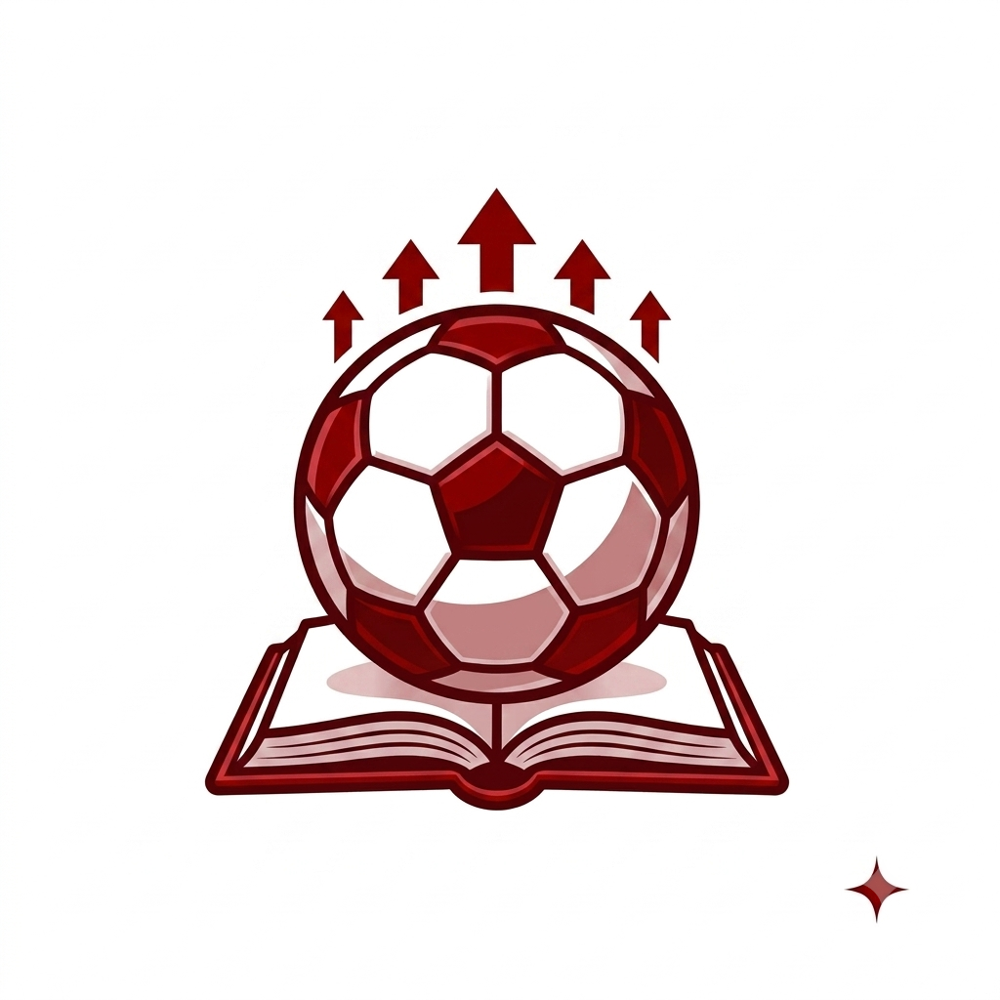

Meu primeiro post
Por: Heitor Costa Curta Rodrigues
Boas-vindas ao meu novo blog! Aqui vou postar tudo sobre os campeonatos nacionais, contratações e as principais histórias dos gramados ao redor do mundo
Vou compartilhar notícias, análises e curiosidades sobre o mundo da bola.

Por: Heitor Costa Curta Rodrigues
Boas-vindas ao meu novo blog! Aqui vou postar tudo sobre os campeonatos nacionais, contratações e as principais histórias dos gramados ao redor do mundo
Por: Heitor Costa Curta Rodrigues
Preparem-se para muita análise tática, debates acalorados sobre os craques da rodada e os bastidores mais fascinantes do mundo da bola. Nesta jornada pelo universo do futebol, vamos destrinchar cada lance decisivo e acompanhar de perto as maiores emoções dos gramados.